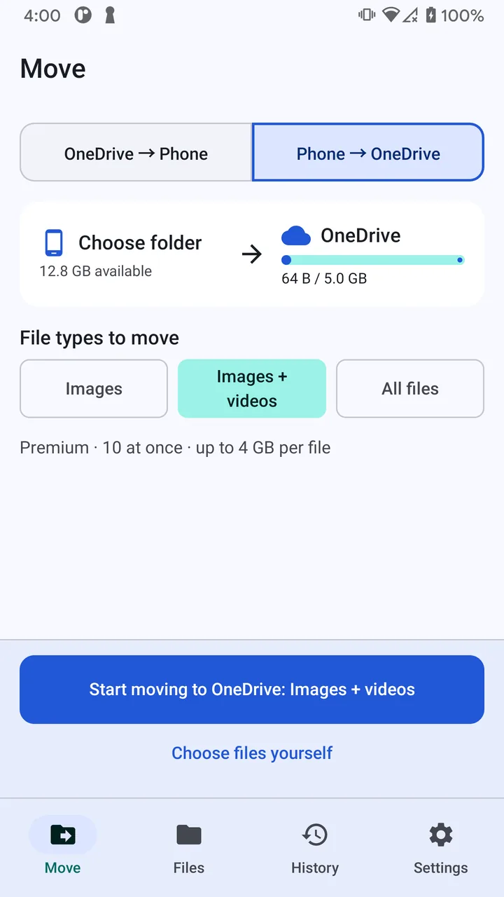

安全に移動
- すべてのファイルをまずコピーし、サイズとハッシュで検証します。コピーを確認できた場合にのみ元ファイルを削除します。
- OneDriveから削除したファイルはOneDriveのごみ箱に入るため、そこから復元できます。
- ファイルはスマートフォンとMicrosoftの間で直接転送されます。DriveSyncのサーバーも、新しく作るアカウントもありません。
PixelでのGoogle フォトのバックアップに最適化
Google フォトの無制限バックアップが使える以前のPixelをお使いですか？DriveSyncは、OneDriveにたまった写真と動画をそのPixelに移し、OneDriveの容量を空けます。

写真と動画はDCIM/Cameraに直接保存されます。Google フォトが追加設定なしでバックアップするフォルダです。フォルダを選ぶ必要も、サブフォルダのバックアップをオンにする必要もありません。
ファイルは元の画質のまま、1バイトも変えずに移します。1件ずつ検証してからOneDrive側の元ファイルを削除します。
Google フォトのバックアップが終わったら、スマートフォンから消して次の分を続けて移せます。
無制限バックアップの可否は、Pixelの機種（Pixel 5以前）とGoogleの規約によって異なります。DriveSyncはAndroid 8以降のすべてのスマートフォンで使えます。フォルダを選ばずにDCIM/Cameraへ保存する機能はAndroid 10以降で動作します。
クラウドの容量を空けます。
スマートフォンの容量を空けます。フォルダを選ぶと、ファイルをアップロードして検証し、スマートフォンから削除します。



買い切り、サブスクリプションではありません
OneDriveの写真をPixelに移してGoogle フォトでバックアップ。検証後に元ファイルを削除します。